| austin robert hermann | |
|
OTHER
|
I bought a Durst Printo table top RA-4 paper processor. It's a series of trays, heating elements, motors, plastic gears, rollers, and an inclined plain that spins and stirs a chemical baths; to print color photographs in a traditional darkroom. The machine takes in exposed paper and runs it through a series of temperature controled baths in order to develop the image and make stable in light. They were made in the 90s before digital swallowed us whole and marketed to home darkroom color printing. 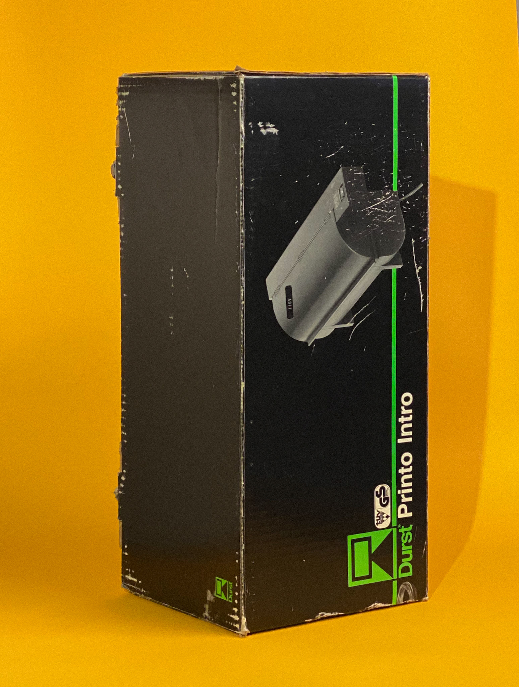 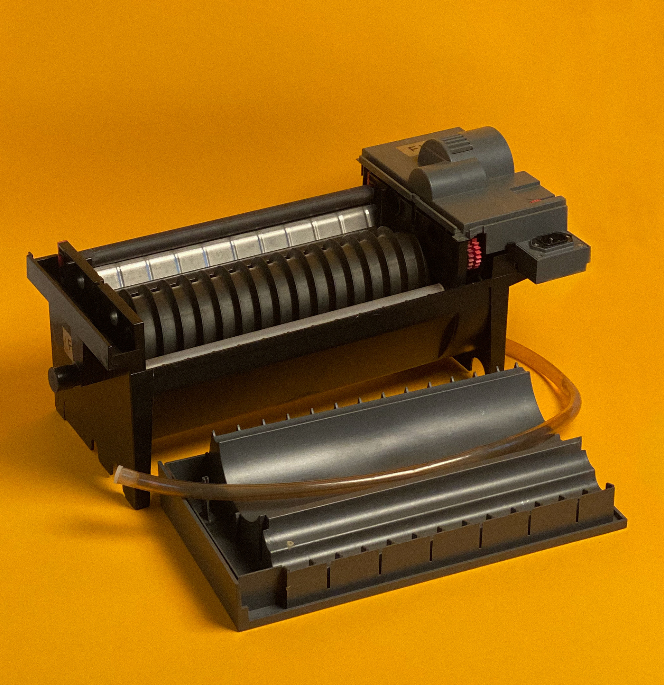 A lot of rollers and gears were either broken, stripped or missing. The company that made these no longer sells parts and they are expensive if you find old stock online. I measured the old crumbing gears and modeled them as accuratly as I could in Cinema 4D. It then took a few iterations to learn how to model things to hold up under load but I eventually got working results for my printer and shared the results. 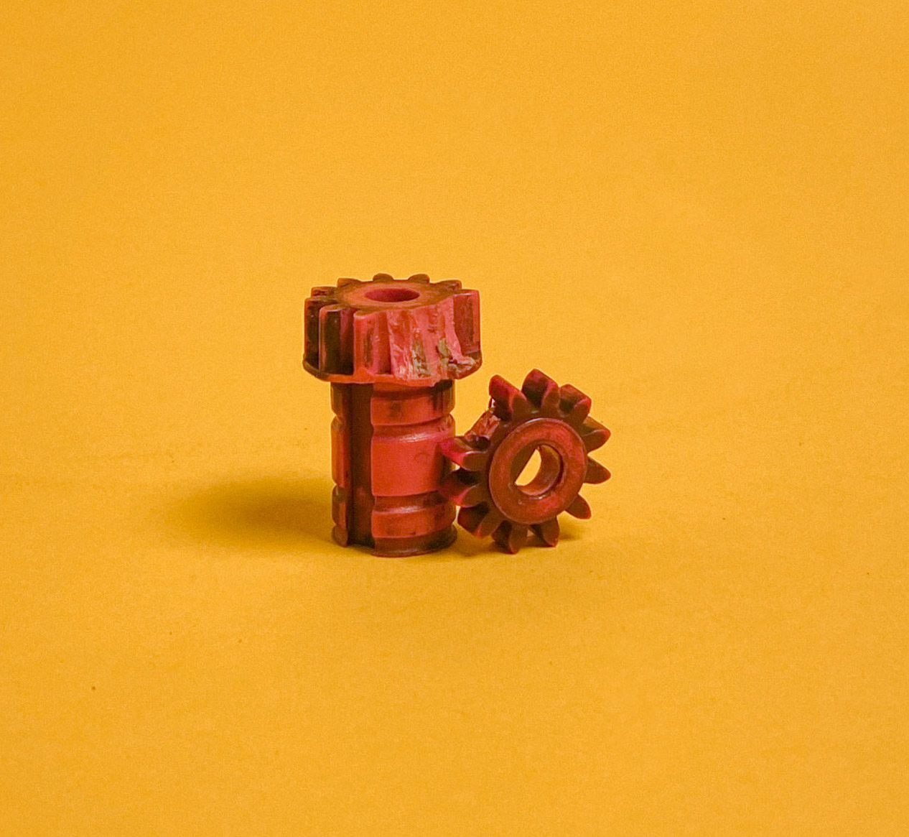 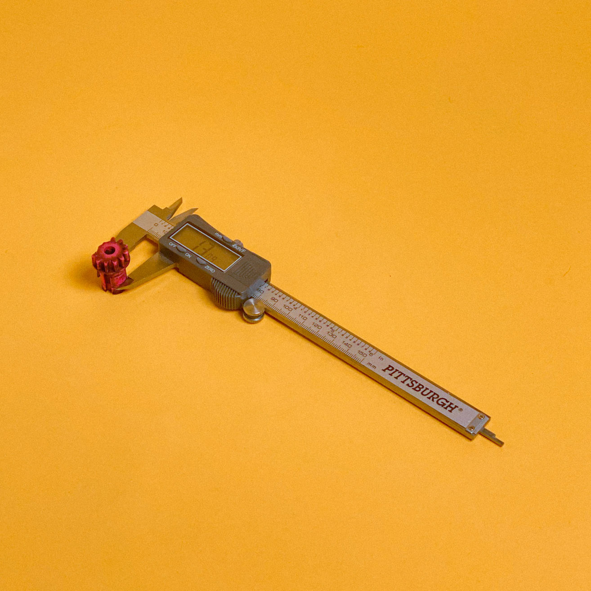 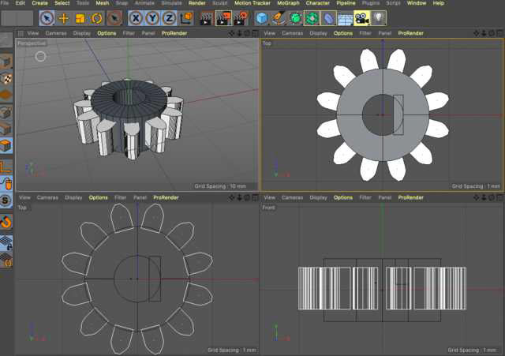 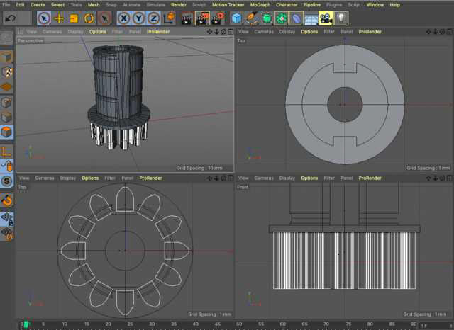 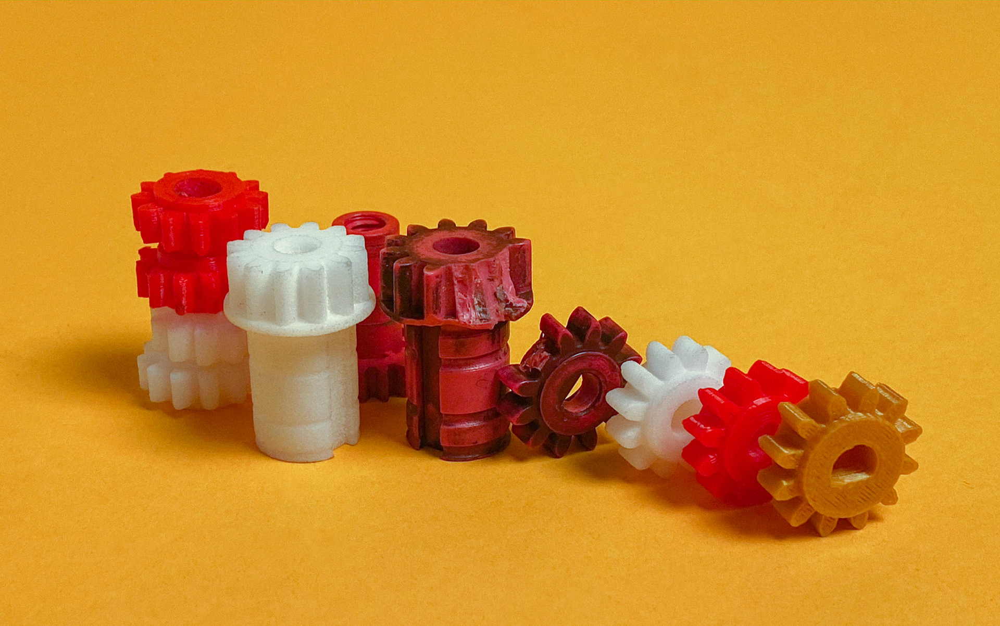 Below are links to the individual parts if you want to print your own to keep these machines running. (Your local library more than likely has a free printer you can just email files to) I would suggest testing a few materials to make sure they hold up to your chemistry. PETG has worked in my BLIX at 35ºC 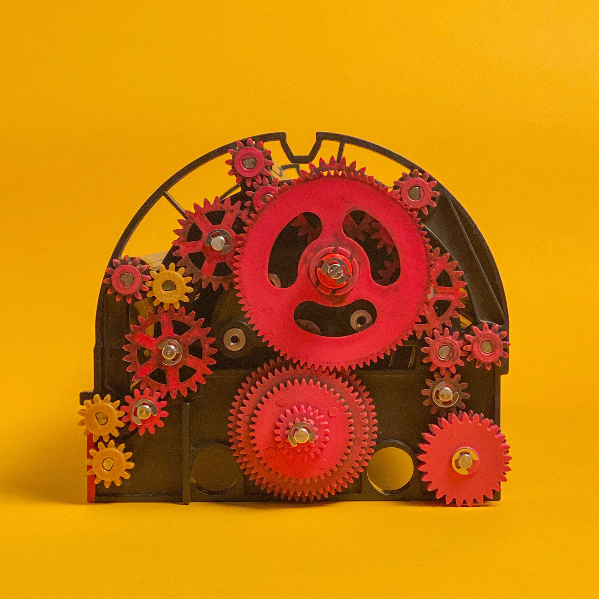 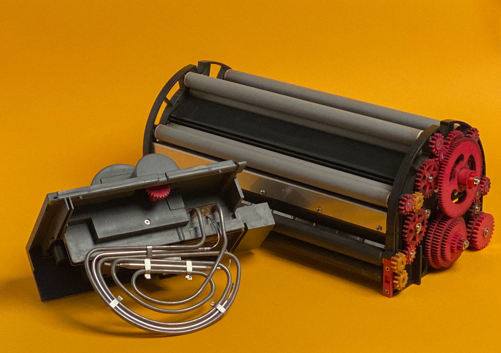 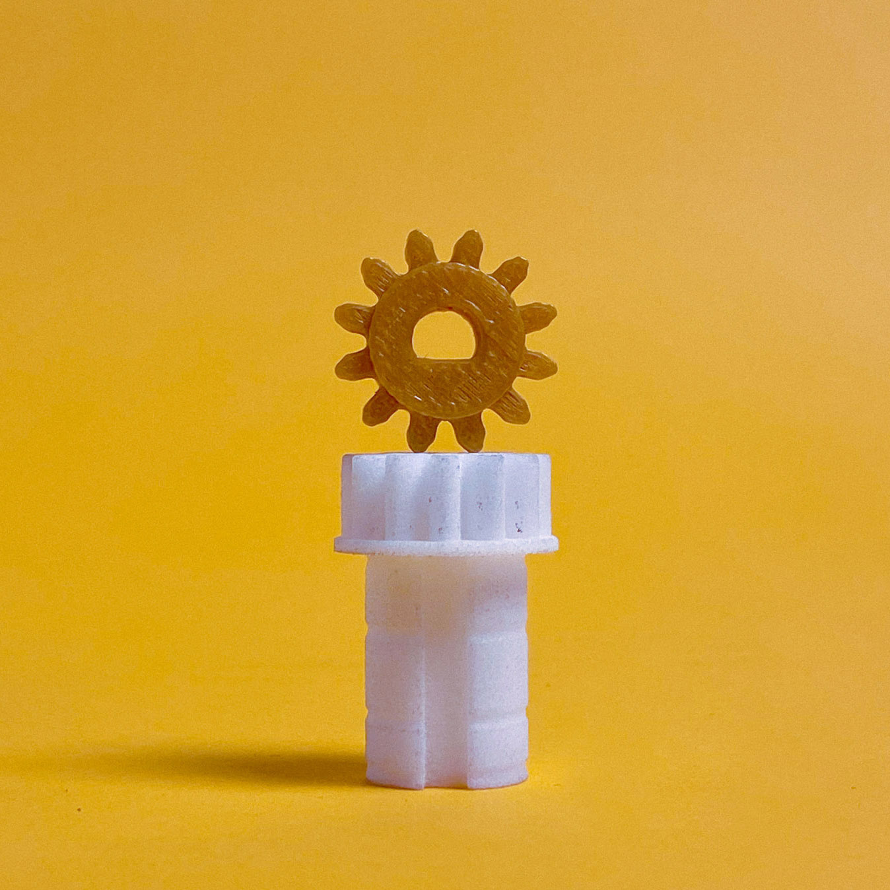 Here's a few of my gears printed in other folks machines around the world :) 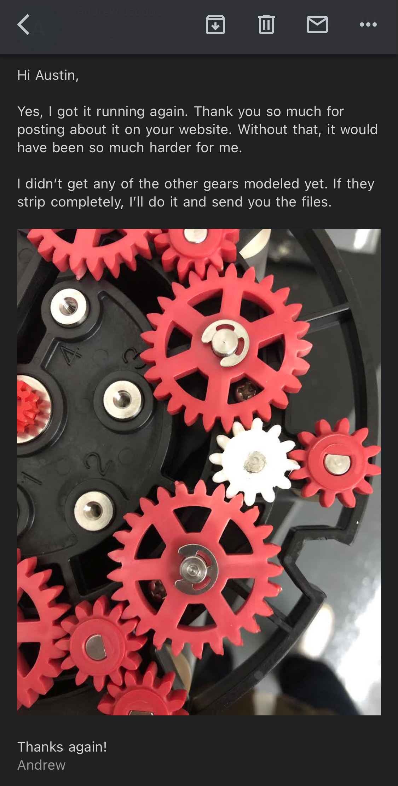 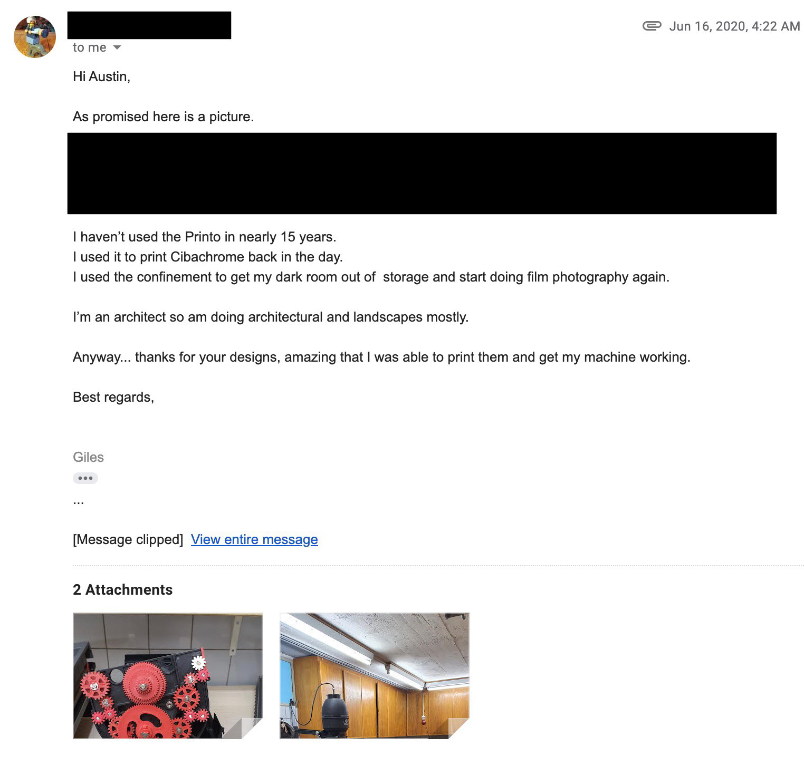 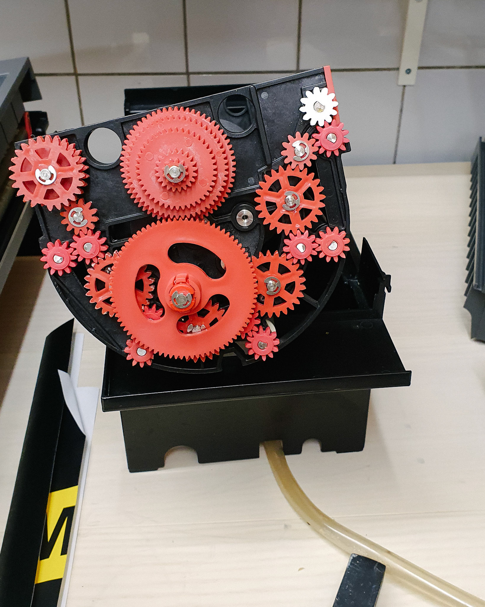 |